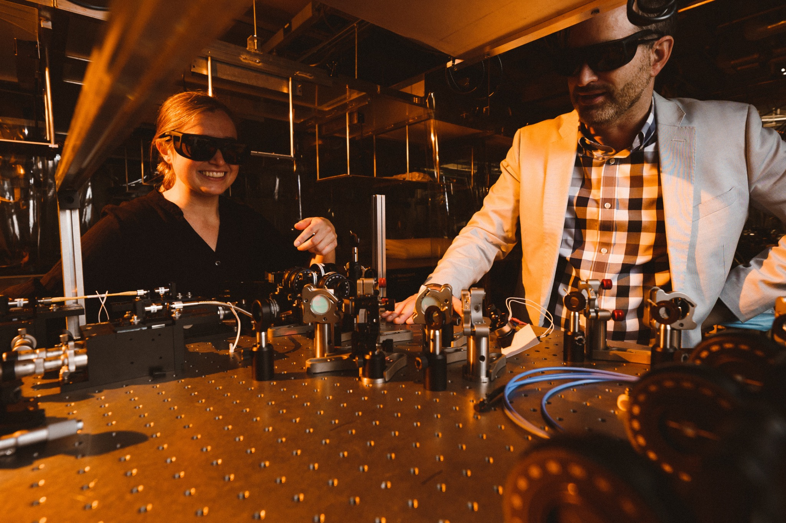

Positions
Join the group
We welcome inquiries from undergraduate students, graduate students, postdoctoral researchers, and visitors interested in quantum photonics, ultrafast optics, and nonlinear optics.

What we are looking for
Relevant backgrounds include quantum optics, photonics, nonlinear optics, ultrafast optics, experimental physics, electronics, optical design, programming, and theory or simulation.
We are open to hearing from prospective undergraduate students, graduate students, and postdocs whose interests fit the group’s research directions.
How to apply
Students should include a CV and transcript. Postdoctoral applicants should include a CV, a brief statement of research interests, and examples of publications.
Please contact one of the permanent staff scientists whose research interests are closest to yours.